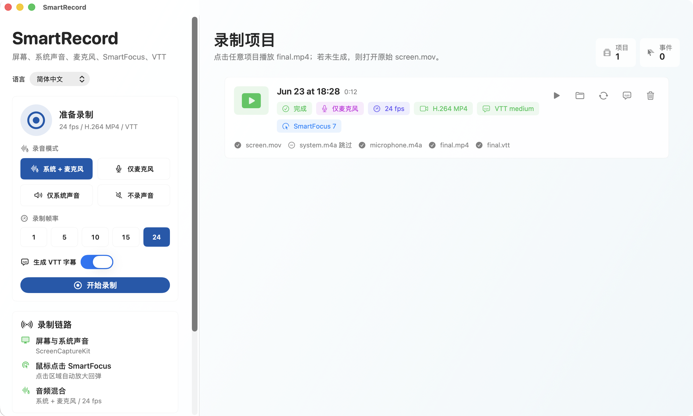

Flexible audio capture
Choose microphone audio, system audio, both sources together, or silent screen recording depending on the project.
macOS screen recording
SmartRecord helps creators, teachers, developers, and product teams capture polished H.264 recordings on Mac with microphone and system audio options plus SmartFocus cursor emphasis.

What it does
Choose microphone audio, system audio, both sources together, or silent screen recording depending on the project.
Mouse activity can guide a temporary zoom into the active area, then return smoothly to the full recording.
Recorded screen video and selected audio sources are combined into a local MP4 file ready to review or share.
Privacy first
SmartRecord is designed around local files. Screen content, microphone audio, system audio, and exports are processed on your Mac and are not uploaded to a SmartRecord server.
View the full privacy policy